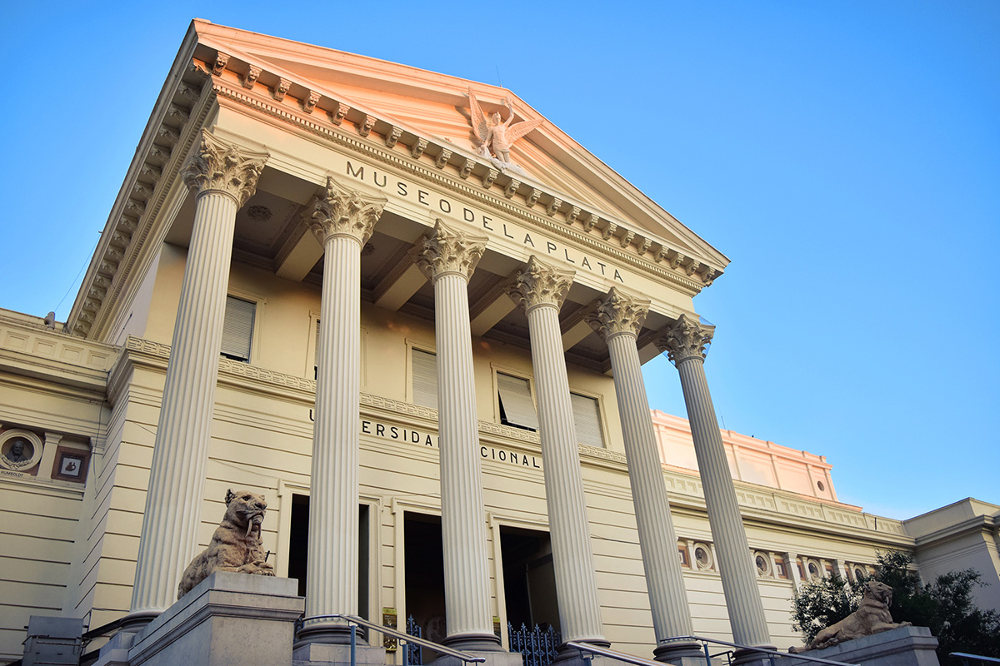
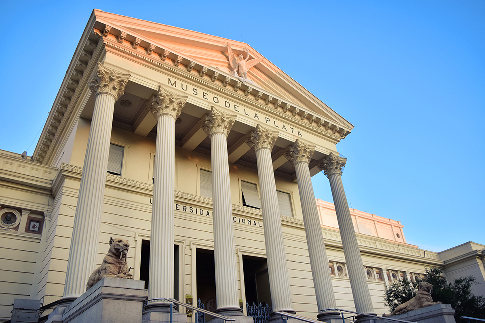

Welcome to La Plata!
 



Things to know
La Plata is the capital city of Buenos Aires Province, Argentina. It
has a population of 654,324 and its metropolitan area, the Greater
La Plata, has 787,294 inhabitants. The city was planned and
developed to serve as the provincial capital after the city of
Buenos Aires was federalized in 1880. It was officially founded by
Governor Dardo Rocha on 19 November 1882. Its construction is fully
documented in photographs by Tomás Bradley Sutton.
The city is home to two important first division football teams:
Estudiantes de La Plata and Gimnasia y Esgrima La Plata.
According to the National Economic Survey, a total of 23,844 local listings, 90% are dedicated to the production of goods and services, 4% belonged to the Civil Service, 2% for semi sideshows or removable; 1% for worship, political parties and unions, and the remaining 2% was in the process of classification. This wonderful place has a Stock Market (Bolsa de Comercio) founded in 1960, member of the Argentine stock market system.
Tourism
The most important tourist sites are located in the heart of the
city's founding, between Streets 51 and 53, being the center of the
city's Plaza Moreno. The square separates two great works of the
city: the Metropolitan Cathedral of La Plata "Immaculate Conception"
and the Palacio Municipal.
The city of La Plata has many monuments and historical sites. Among
them are: the Banco Provincia de Buenos Aires headquarters, the
Curutchet House, Casa de Gobierno Provincial, Casa Mariani –
Teruggi, Centro Cultural Islas Malvinas, Centro Cultural Meridiano
V, Centro Cultural Pasaje Dardo Rocha, Iglesia San Benjamín, la
Legislatura Provincial, Museo de Ciencias Naturales, the Quinta
Oreste Santospago, the Rectorado de la UNLP, Museo Ferroviario of
Tolosa, the Teatro Municipal Coliseo Podestá, the Anfiteatro Martín
Fierro, the Estadio Ciudad de La Plata, among others.
Number of Visits: